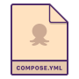

Docker Compose Setup Guide
If you already use Compose, this is the easiest way to get started.
Get Started
Dockerfile Setup Guide
If you don’t use Compose, we can build your services independently.
Get StartedDon’t have Dockerfiles yet?
We can generate Dockerfiles from your source code.